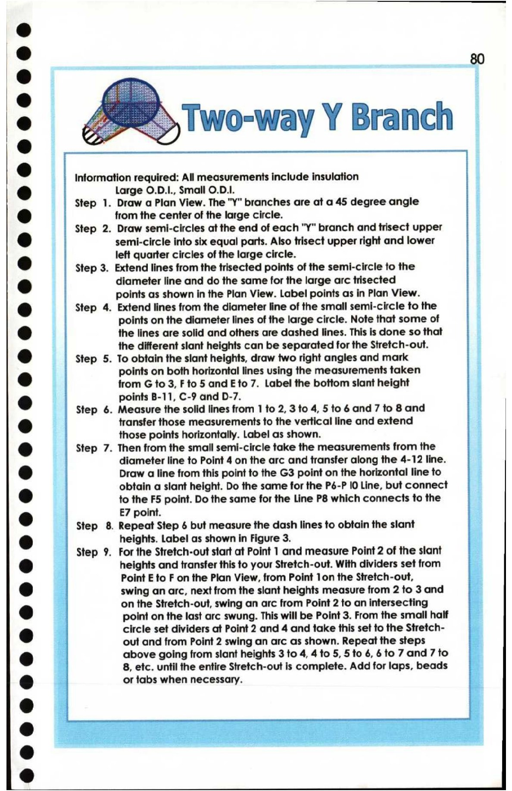

80. Two-way Y Branch

@
——— — 80
1
© Two-way Y Branch
£=> Two-way Y Branc
eo. Sr 2)
e- ;
j Information required: All measurements include insulation
@ } Large O.D.I., Small O.D.I. 4
| Step 1. Draw a Plan View. The "Y" branches are at a 45 degree angle
[ from the center of the large circle.
i Step 2. Draw semi-circles at the end of each "Y" branch and trisect upper
t ) \ semi-circle into six equal parts. Also trisect upper right and lower
{ left quarter circles of the large circle. ;
ce) : Step 3. Extend lines from the trisected points of the semi-circle to the ;
o i diameter line and do the same for the large arc trisected t
| points as shown in the Plan View. Label points as in Plan View.
@ Step 4. Extend lines from the diameter line of the small semi-circle to the
points on the diameter lines of the large circle. Note that some of
@ the lines are solid and others are dashed lines. This is done so that
the different slant heights can be separated for the Stretch-out.
a) Step 5. To obtain the slant heights, draw two right angles and mark
points on both horizontal lines using the measurements taken
is) from G to 3, F to 5 and Eto 7. Label the bottom slant height
@ points B-11, C-9 and D-7.
Step 6. Measure the solid lines from 1 to 2,3 to 4, 5 to 6 and 7 to 8 and
re] transfer those measurements to the vertical line and extend
; those points horizontally. Label as shown.
io) Step 7. Then from the small semi-circle take the measurements from the
diameter line to Point 4 on the arc and transfer along the 4-12 line. ;
@ Draw a line from this point to the G3 point on the horizontal line to j
obtain a slant height. Do the same for the P6-P I0 Line, but connect b
8 to the F5 point. Do the same for the Line P8 which connects to the i
e a E7 point. fe
| Step 8. Repeat Step 6 but measure the dash lines to obtain the slant ah:
@ heights. Label as shown in Figure 3.
Step 9. For the Stretch-out start at Point 1 and measure Point 2 of the slant
@ heights and transfer this to your Stretch-out. With dividers set from
Point E to F on the Plan View, from Point 1on the Stretch-out,
C swing an arc, next from the slant heights measure from 2 to 3 and
on the Stretch-out, swing an arc from Point 2 to an intersecting
@ point on the last arc swung. This will be Point 3. From the small half
@ circle set dividers at Point 2 and 4 and take this set to the Stretch-
out and from Point 2 swing an arc as shown. Repeat the steps
@ above going from slant heights 3 to 4, 4 to 5, 5 to 6, 6 to 7 and 7 to
8, etc. until the entire Stretch-out is complete. Add for laps, beads
i) or fabs when necessary.
e
@
@